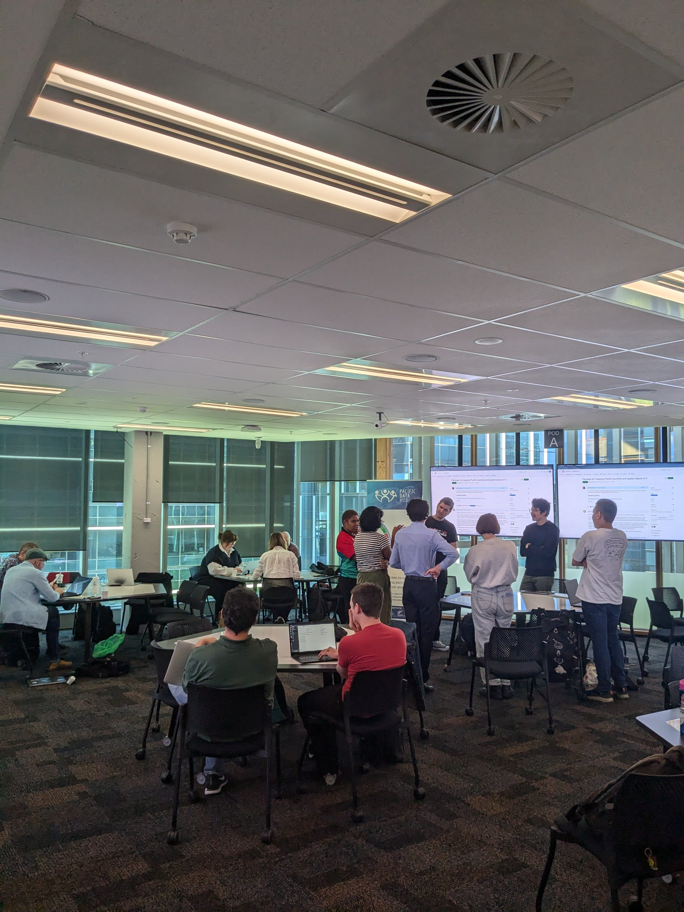
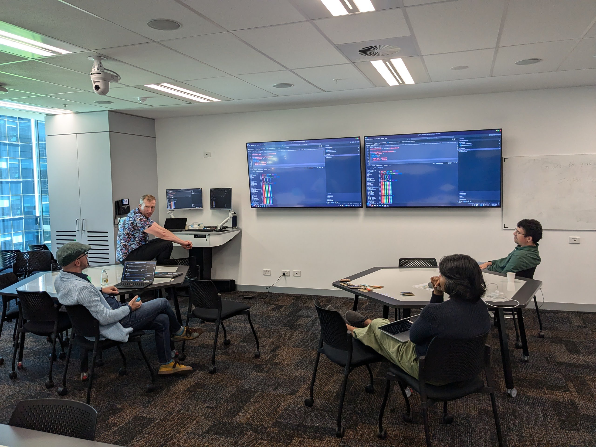
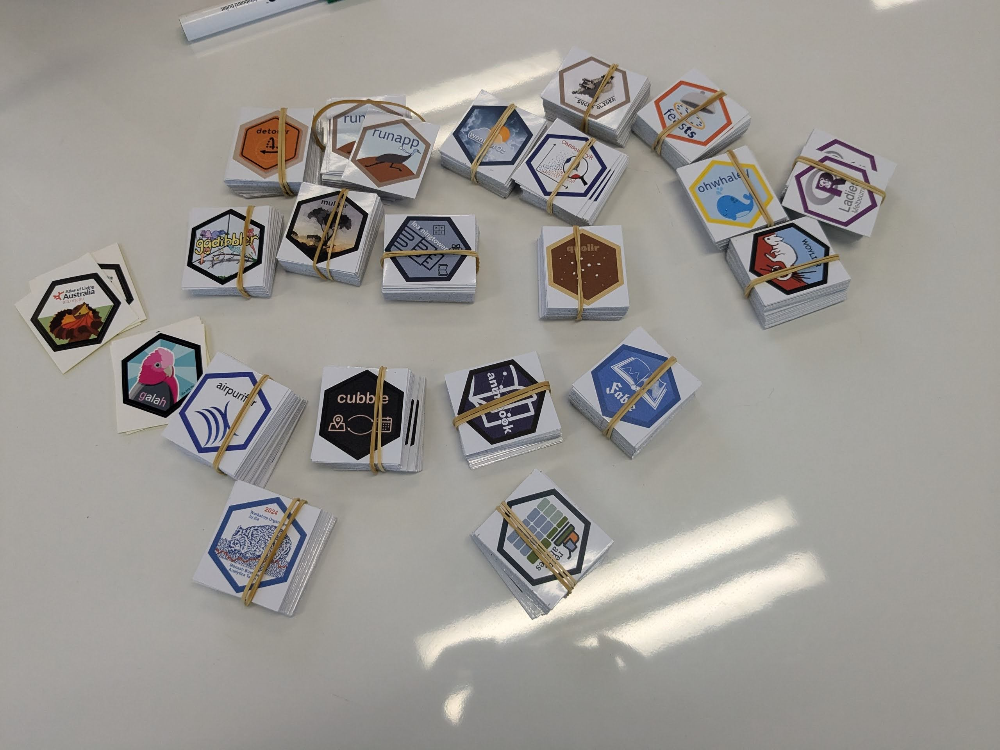
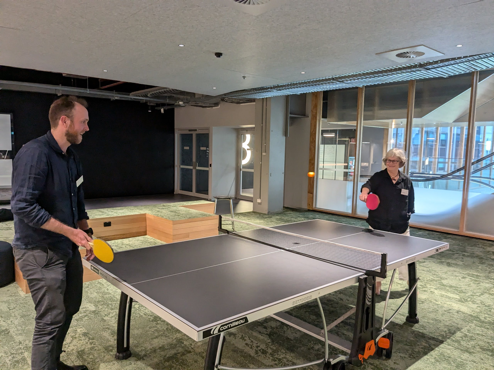
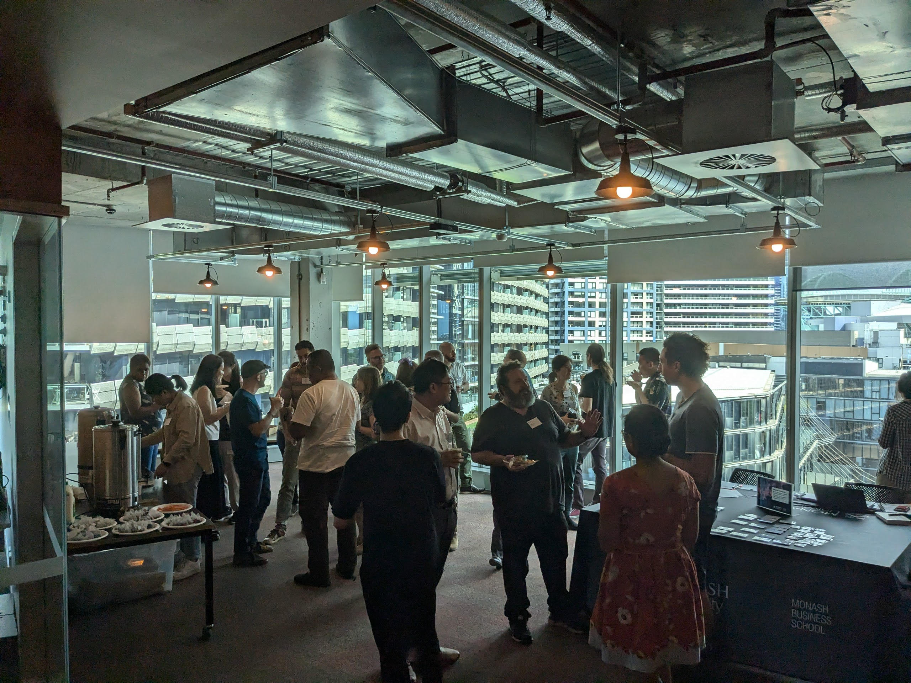

OceaniaR 2024
R Development and Open Source Software Hackathon - Melbourne 2024
The first ever OceaniaR meeting took place this week in Melbourne!
The event took place the day before the Monash WOMBAT 2024 conference and was designed as a hackathon/unconference style event with a focus on promoting projects and participation from R users in the Oceania region including Australia, New Zealand and the Pacific Islands.
It was such as nice day with R developers, researchers, scientists, statisticians of all career levels coming together to learn and make new connections. We were also lucky to have participants from Sydney, Brisbane, Perth, Canberra, New Zealand, Noumea, Vanuatu, Papua New Guinea, USA.
Projects
alt-text-for-data-plots
Alt text provides a textual alternative to non-text content in HTML documents. It serves various purposes:
- It is necessary for accessibility guidelines.
- ensures your data visualisations communicate to everybody.
- Assistive technologies can convert alt text into other formats such as speech or Braille, providing a description for people using screen reading software.
- alt text is displayed in place of the figure if it fails to load, or is viewed in a text-based browser.
- alt text can assist both general and image-specific search engines.
symbolic
symbolic is an R package designed to provide symbolic algebra capabilities natively in R using R functions. It is highly experimental and dependent on external contributors to be a fully fledged Computer Algebra System (CAS). It will be developed to the extent needed for my upstream packages, specifically distributional which requires many symbolic algebra tools not yet readily available in R. Currently powered by yacas via Ryacas.
populaR
populaR provides a convenient interface to the UN’s World Population Prospects API. Several pre-baked datasets are included, as well as a convenient wrapper for more advanced API users
ozroaddeaths
ozroaddeaths is a package that pulls data from the Australian Road Deaths Database, run by the Bureau of Infrastructure, Transport and Regional Economics (BITRE). This provides basic details of road transport crash fatalities in Australia as reported by the police each month to the State and Territory road safety authorities.
nzbabynames & ozbabynames
The ozbabynames package provides the dataset ozbabynames. This contains popular Australian baby names by sex, state and year.
Case study: Unpaid Labour in Australia
Unpaid labor includes essential tasks like housework, caregiving, volunteering. These tasks sustains households and communities but are often unrecognized. Women disproportionately bear the burden of unpaid labor, limiting their participation in the paid workforce and contributing to gender inequality. This imbalance affects women’s economic security and career opportunities, while the value of unpaid work remains largely invisible in traditional economic measures. Recognizing and addressing unpaid labor is key to achieving gender equity and a more inclusive economy.
Tools for detecting misidentified species in biodiversity databases
Biodiversity databases such as the Global Biodiversity Information Facility (GBIF) or Atlas of Living Australia (ALA) contain large amounts of open data, but also face persistent challenges in detecting ‘wrong’ points; observations of plants and animals that appear to be in the wrong place, be allocated to the wrong species, or both. Detecting these records is notoriously difficult for those who lack expert knowledge of species biogeography.
Package for mapping Pacific countries and spatial objects
A customised package for mapping and dealing with spatial data relating to pacific countries and regions could help standardise and speed up the production of insights such as choropleth maps etc.
Improved Package for R SDMX Integration for Pacific Data
{rsdmx} is an existing library exists to parse/read SDMX data and metadata in R. See here: https://github.com/opensdmx/rsdmx. This package is extensive but not tailored for use by Pacific Statistical Agencies and experts. Could a fork or domain specific implementation of this tool be achieved, specifically to improve usability for Pacific statistical data.
Photos


  
Looking for a data science consultant? Feel free to get in touch at wavedatalabs.com.au